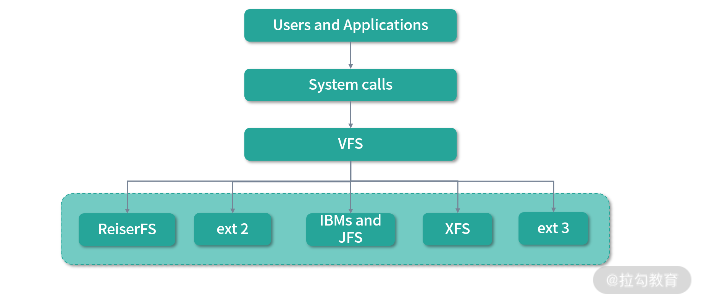
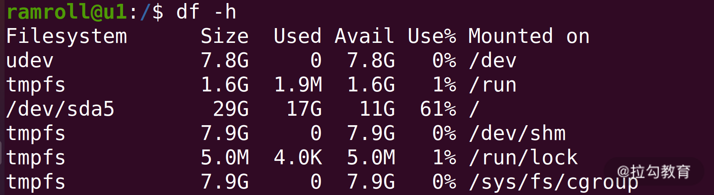
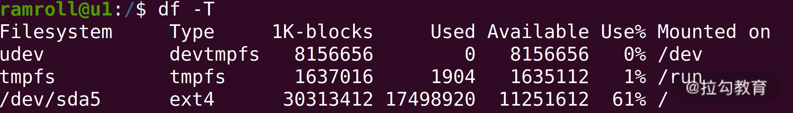
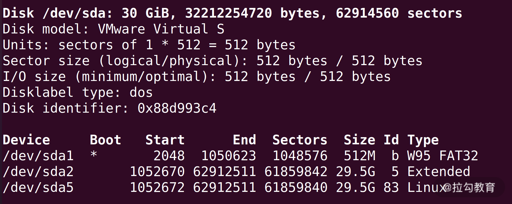
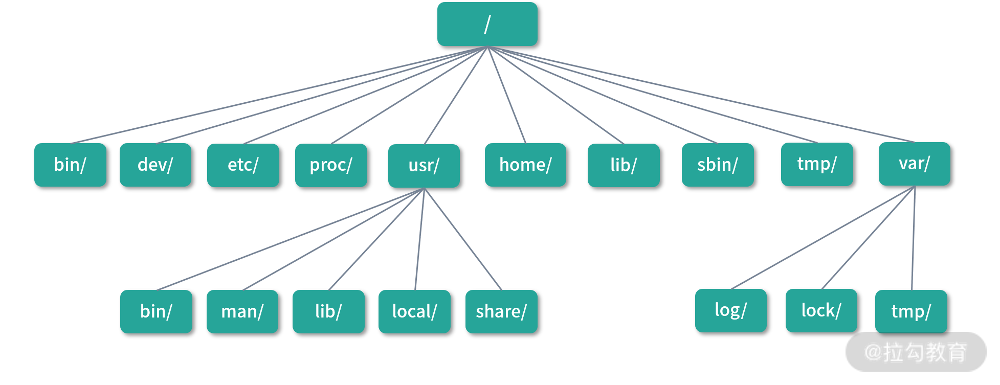

- 00 开篇词 为什么大厂面试必考操作系统？.md.html
- 00 课前必读 构建知识体系，可以这样做！.md.html
- 01 计算机是什么：“如何把程序写好”这个问题是可计算的吗？.md.html
- 02 程序的执行：相比 32 位，64 位的优势是什么？（上）.md.html
- 03 程序的执行：相比 32 位，64 位的优势是什么？（下）.md.html
- 04 构造复杂的程序：将一个递归函数转成非递归函数的通用方法.md.html
- 05 存储器分级：L1 Cache 比内存和 SSD 快多少倍？.md.html
- 05 (1) 加餐 练习题详解（一）.md.html
- 06 目录结构和文件管理指令：rm -rf 指令的作用是？.md.html
- 07 进程、重定向和管道指令：xargs 指令的作用是？.md.html
- 08 用户和权限管理指令： 请简述 Linux 权限划分的原则？.md.html
- 09 Linux 中的网络指令：如何查看一个域名有哪些 NS 记录？.md.html
- 10 软件的安装： 编译安装和包管理器安装有什么优势和劣势？.md.html
- 11 高级技巧之日志分析：利用 Linux 指令分析 Web 日志.md.html
- 12 高级技巧之集群部署：利用 Linux 指令同时在多台机器部署程序.md.html
- 12 (1)加餐 练习题详解（二）.md.html
- 13 操作系统内核：Linux 内核和 Windows 内核有什么区别？.md.html
- 14 用户态和内核态：用户态线程和内核态线程有什么区别？.md.html
- 15 中断和中断向量：Javajs 等语言为什么可以捕获到键盘输入？.md.html
- 16 WinMacUnixLinux 的区别和联系：为什么 Debian 漏洞排名第一还这么多人用？.md.html
- 16 (1)加餐 练习题详解（三）.md.html
- 17 进程和线程：进程的开销比线程大在了哪里？.md.html
- 18 锁、信号量和分布式锁：如何控制同一时间只有 2 个线程运行？.md.html
- 19 乐观锁、区块链：除了上锁还有哪些并发控制方法？.md.html
- 20 线程的调度：线程调度都有哪些方法？.md.html
- 21 哲学家就餐问题：什么情况下会触发饥饿和死锁？.md.html
- 22 进程间通信： 进程间通信都有哪些方法？.md.html
- 23 分析服务的特性：我的服务应该开多少个进程、多少个线程？.md.html
- 23 (1)加餐 练习题详解（四）.md.html
- 24 虚拟内存 ：一个程序最多能使用多少内存？.md.html
- 25 内存管理单元： 什么情况下使用大内存分页？.md.html
- 26 缓存置换算法： LRU 用什么数据结构实现更合理？.md.html
- 27 内存回收上篇：如何解决内存的循环引用问题？.md.html
- 28 内存回收下篇：三色标记-清除算法是怎么回事？.md.html
- 28 (1)加餐 练习题详解（五）.md.html
- 29 Linux 下的各个目录有什么作用？.md.html
- 30 文件系统的底层实现：FAT、NTFS 和 Ext3 有什么区别？.md.html
- 31 数据库文件系统实例：MySQL 中 B 树和 B+ 树有什么区别？.md.html
- 32 HDFS 介绍：分布式文件系统是怎么回事？.md.html
- 32 (1)加餐 练习题详解（六）.md.html
- 33 互联网协议群（TCPIP）：多路复用是怎么回事？.md.html
- 34 UDP 协议：UDP 和 TCP 相比快在哪里？.md.html
- 35 Linux 的 IO 模式：selectpollepoll 有什么区别？.md.html
- 36 公私钥体系和网络安全：什么是中间人攻击？.md.html
- 36 (1)加餐 练习题详解（七）.md.html
- 37 虚拟化技术介绍：VMware 和 Docker 的区别？.md.html
- 38 容器编排技术：如何利用 K8s 和 Docker Swarm 管理微服务？.md.html
- 39 Linux 架构优秀在哪里.md.html
- 40 商业操作系统：电商操作系统是不是一个噱头？.md.html
- 40 (1)加餐 练习题详解（八）.md.html
- 41 结束语 论程序员的发展——信仰、选择和博弈.md.html
29 Linux 下的各个目录有什么作用？
今天我们开始学习模块六：文件系统。学习文件系统的意义在于文件系统有很多设计思路可以迁移到实际的工作场景中，比如：
- MySQL 的 binlog 和 Redis AOF 都像极了日志文件系统的设计；
- B Tree 用于加速磁盘数据访问的设计，对于索引设计也有通用的意义。
特别是近年来分布式系统的普及，学习分布式文件系统，也是理解分布式架构最核心的一个环节。其实文件系统最精彩的还是虚拟文件系统的设计，比如 Linux 可以支持每个目录用不同的文件系统。这些文件看上去是一个个目录和文件，实际上可能是磁盘、内存、网络文件系统、远程磁盘、网卡、随机数产生器、输入输出设备等，这样虚拟文件系统就成了整合一切设备资源的平台。大量的操作都可以抽象成对文件的操作，程序的书写就会完整而统一，且扩展性强。
这一讲，我会从 Linux 的目录结构和用途开始，带你认识 Linux 的文件系统。Linux 所有的文件都建立在虚拟文件系统（Virtual File System ，VFS）之上，如下图所示：

当你访问一个目录或者文件，虽然用的是 Linux 标准的文件 API 对文件进行操作，但实际操作的可能是磁盘、内存、网络或者数据库等。因此，Linux 上不同的目录可能是不同的磁盘，不同的文件可能是不同的设备。
分区结构
在 Linux 中，/是根目录。之前我们在“08 讲”提到过，每个目录可以是不同的文件系统（不同的磁盘或者设备）。你可能会问我，/是对应一个磁盘还是多个磁盘呢？在/创建目录的时候，目录属于哪个磁盘呢？

你可以用df -h查看上面两个问题的答案，在上图中我的/挂载到了/dev/sda5上。如果你想要看到更多信息，可以使用df -T，如下图所示：

/的文件系统类型是ext4。这是一种常用的日志文件系统。关于日志文件系统，我会在“**30 讲”**为你介绍。然后你可能还会有一个疑问，/dev/sda5究竟是一块磁盘还是别的什么？这个时候你可以用fdisk -l查看，结果如下图：

你可以看到我的 Linux 虚拟机上，有一块 30G 的硬盘（当然是虚拟的）。然后这块硬盘下有 3 个设备（Device）：/dev/sda1, /dev/sda2 和 /dev/sda5。在 Linux 中，数字 1~4 结尾的是主分区，通常一块磁盘最多只能有 4 个主分区用于系统启动。主分区之下，还可以再分成若干个逻辑分区，4 以上的数字都是逻辑分区。因此/dev/sda2和/dev/sda5是主分区包含逻辑分区的关系。
挂载
分区结构最终需要最终挂载到目录上。上面例子中/dev/sda5分区被挂载到了/下。 这样在/创建的文件都属于这个/dev/sda5分区。 另外，/dev/sda5采用ext4文件系统。可见不同的目录可以采用不同的文件系统。
将一个文件系统映射到某个目录的过程叫作挂载（Mount）。当然这里的文件系统可以是某个分区、某个 USB 设备，也可以是某个读卡器等。你可以用mount -l查看已经挂载的文件系统。

上图中的sysfs``proc``devtmpfs``tmpfs``ext4都是不同的文件系统，下面我们来说说它们的作用。
sysfs让用户通过文件访问和设置设备驱动信息。proc是一个虚拟文件系统，让用户可以通过文件访问内核中的进程信息。devtmpfs在内存中创造设备文件节点。tmpfs用内存模拟磁盘文件。ext4是一个通常意义上我们认为的文件系统，也是管理磁盘上文件用的系统。
你可以看到挂载记录中不仅有文件系统类型，挂载的目录（on 后面部分），还有读写的权限等。你也可以用mount指令挂载一个文件系统到某个目录，比如说：
mount /dev/sda6 /abc
上面这个命令将/dev/sda6挂载到目录abc。
目录结构
因为 Linux 内文件系统较多，用途繁杂，Linux 对文件系统中的目录进行了一定的归类，如下图所示：

最顶层的目录称作根目录， 用/表示。/目录下用户可以再创建目录，但是有一些目录随着系统创建就已经存在，接下来我会和你一起讨论下它们的用途。
/bin（二进制）包含了许多所有用户都可以访问的可执行文件，如 ls, cp, cd 等。这里的大多数程序都是二进制格式的，因此称作bin目录。bin是一个命名习惯，比如说nginx中的可执行文件会在 Nginx 安装目录的 bin 文件夹下面。
/dev（设备文件） 通常挂载在devtmpfs文件系统上，里面存放的是设备文件节点。通常直接和内存进行映射，而不是存在物理磁盘上。
值得一提的是其中有几个有趣的文件，它们是虚拟设备。
/dev/null是可以用来销毁任何输出的虚拟设备。你可以用>重定向符号将任何输出流重定向到/dev/null来忽略输出的结果。
/dev/zero是一个产生数字 0 的虚拟设备。无论你对它进行多少次读取，都会读到 0。
/dev/ramdom是一个产生随机数的虚拟设备。读取这个文件中数据，你会得到一个随机数。你不停地读取这个文件，就会得到一个随机数的序列。
/etc（配置文件），/etc名字的含义是and so on……，也就是“等等及其他”，Linux 用它来保管程序的配置。比如说mysql通常会在/etc/mysql下创建配置。再比如说/etc/passwd是系统的用户配置，存储了用户信息。
/proc（进程和内核文件） 存储了执行中进程和内核的信息。比如你可以通过/proc/1122目录找到和进程1122关联的全部信息。还可以在/proc/cpuinfo下找到和 CPU 相关的全部信息。
/sbin（系统二进制） 和/bin类似，通常是系统启动必需的指令，也可以包括管理员才会使用的指令。
/tmp（临时文件） 用于存放应用的临时文件，通常用的是tmpfs文件系统。因为tmpfs是一个内存文件系统，系统重启的时候清除/tmp文件，所以这个目录不能放应用和重要的数据。
/var （Variable data file,，可变数据文件） 用于存储运行时的数据，比如日志通常会存放在/var/log目录下面。再比如应用的缓存文件、用户的登录行为等，都可以放到/var目录下，/var下的文件会长期保存。
/boot（启动） 目录下存放了 Linux 的内核文件和启动镜像，通常这个目录会写入磁盘最头部的分区，启动的时候需要加载目录内的文件。
/opt（Optional Software，可选软件） 通常会把第三方软件安装到这个目录。以后你安装软件的时候，可以考虑在这个目录下创建。
/root（root 用户家目录） 为了防止误操作，Linux 设计中 root 用户的家目录没有设计在/home/root下，而是放到了/root目录。
/home（家目录） 用于存放用户的个人数据，比如用户lagou的个人数据会存放到/home/lagou下面。并且通常在用户登录，或者执行cd指令后，都会在家目录下工作。 用户通常会对自己的家目录拥有管理权限，而无法访问其他用户的家目录。
/media（媒体） 自动挂载的设备通常会出现在/media目录下。比如你插入 U 盘，通常较新版本的 Linux 都会帮你自动完成挂载，也就是在/media下创建一个目录代表 U 盘。
/mnt（Mount，挂载） 我们习惯把手动挂载的设备放到这个目录。比如你插入 U 盘后，如果 Linux 没有帮你完成自动挂载，可以用mount命令手动将 U 盘内容挂载到/mnt目录下。
/svr（Service Data,，服务数据） 通常用来存放服务数据，比如说你开发的网站资源文件（脚本、网页等）。不过现在很多团队的习惯发生了变化， 有的团队会把网站相关的资源放到/www目录下，也有的团队会放到/data下。总之，在存放资源的角度，还是比较灵活的。
/usr（Unix System Resource） 包含系统需要的资源文件，通常应用程序会把后来安装的可执行文件也放到这个目录下，比如说
vim编辑器的可执行文件通常会在/usr/bin目录下，区别于ls会在/bin目录下/usr/sbin中会包含有通常系统管理员才会使用的指令。/usr/lib目录中存放系统的库文件，比如一些重要的对象和动态链接库文件。/usr/lib目录下会有大量的.so文件，这些叫作Shared Object，类似windows下的dll文件。/usr/share目录下主要是文档，比如说 man 的文档都在/usr/share/man下面。
总结
这一讲我们了解了 Linux 虚拟文件系统的设计，并且熟悉了 Linux 的目录结构。我曾经看到不少程序员把程序装到了/home目录，也看到过不少程序员将数据放到了/root目录。这样做并不会带来致命性问题，但是会给其他和你一起工作的同事带来困扰。
今天我们讲到的这些规范是整个世界通用的，如果每个人都能遵循规范的原则，工作起来就会有很好的默契。登录一台linux服务器，你可以通过目录结构快速熟悉。你可以查阅/etc下的配置，看看/opt下装了什么软件，这就是规范的好处。
那么通过这节课的学习，你现在可以尝试来回答本节标题中的试题目：Linux下各个目录有什么作用了吗？
【解析】通常面试官会挑选其中一部分对你进行抽查，如果你快要面试了，再 Review 一下本讲的内容吧。